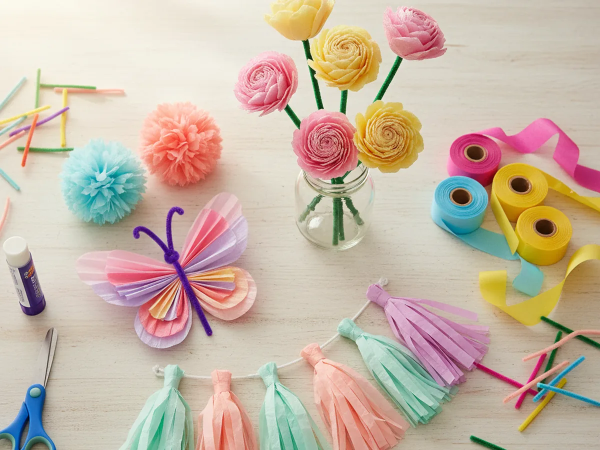
Crepe paper has this special way of turning a regular afternoon into something colorful and a little bit magical. These 20 crepe paper crafts are all simple enough to do at the kitchen table, sweet enough to keep on the shelf, and fun enough to pull your little one happily away from the screen. Pick one for today and bookmark the rest for the next rainy afternoon. 🌷
What You'll Need
Most of these crepe paper crafts use the same little kit, so one quick prep session is enough to work through the whole list at your own pace.
- Crepe paper streamer rolls in 12 colors, the everyday star of these projects and great for garlands, flowers, and pom-poms.
- Lia Griffith fine crepe paper folds, a sturdier crepe paper that holds shape beautifully for flower petals and leaves.
- Fiskars blunt-tip kids scissors, comfortable for little hands and perfect for fringing crepe paper edges.
- Washable disappearing purple glue sticks, so kids can see exactly where they applied glue on lightweight crepe paper.
- Multicolor pipe cleaners, ideal for butterfly bodies, flower stems, and quick twist-on details.
- Green floral stem wire, the secret to making your crepe paper flowers stand tall in a vase.
- White cardstock, a sturdy backing for cards, crowns, and wall pieces.
- Crayola classic markers, helpful for adding small details to flower centers, faces, and labels.
- Optional extras: clear tape, baker's twine or yarn, a paper plate or two, and a hole punch.
20 Sweet Crepe Paper Craft Ideas
1. Twisted Crepe Paper Tissue Flowers
Layer a few squares of pink, peach, and yellow crepe paper, fold them like an accordion, then twist a pipe cleaner around the middle and gently fluff out the layers. Tuck a small bunch into a glass jar and you have a homemade bouquet that lasts way longer than the real thing. These are the gateway crepe paper crafts that make every other idea on the list feel doable.
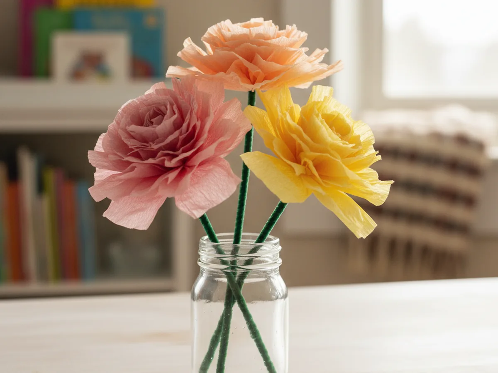
2. Rainbow Streamer Wall Garland
Cut six long strips of crepe paper streamer in red, orange, yellow, green, blue, and purple, then tape them together at the top to form an arched rainbow. Hang it above a crib, a play table, or the breakfast nook for an instant mood lift. Toddlers love picking the color order, even if you end up with two oranges next to each other. 🌈
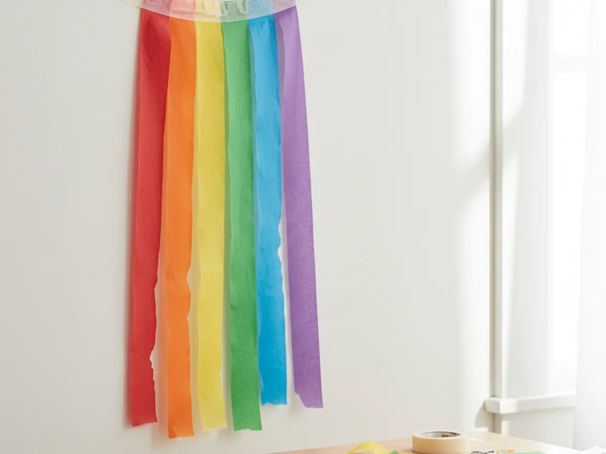
3. Fluffy Crepe Paper Pom-Poms
Stack about eight sheets of crepe paper, fold the stack accordion style, tie a piece of string tightly around the middle, and gently separate the layers into a fluffy ball. Hang a few different sizes from the ceiling or display them in a tall vase. These soft crepe paper crafts are surprisingly forgiving, even when small hands rip a layer or two by mistake.
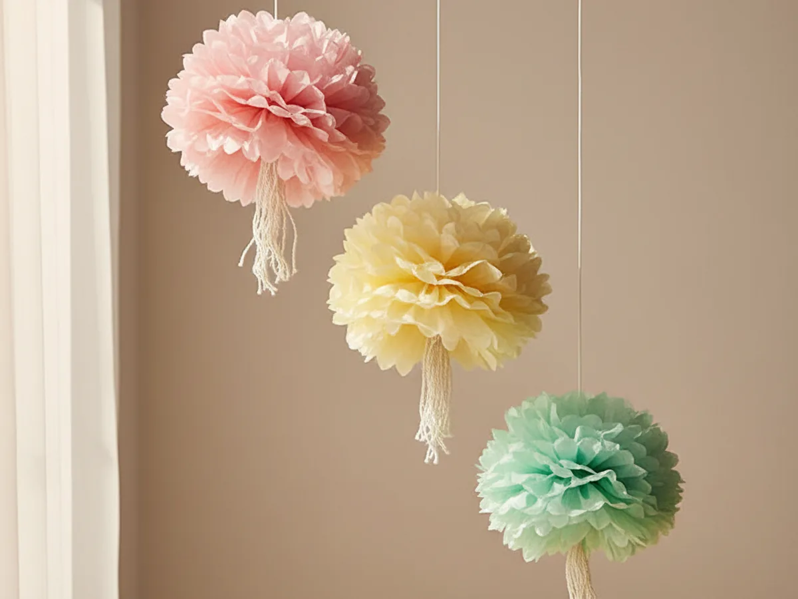
4. Crepe Paper Butterfly with Pipe Cleaner Body
Pinch a square of bright crepe paper in the middle and twist a pipe cleaner around the center to create wings and a sweet little body. Bend the top of the pipe cleaner into two antennae and shape the wings as you like. These tiny butterflies look adorable taped to a windowpane or attached to a homemade wand.
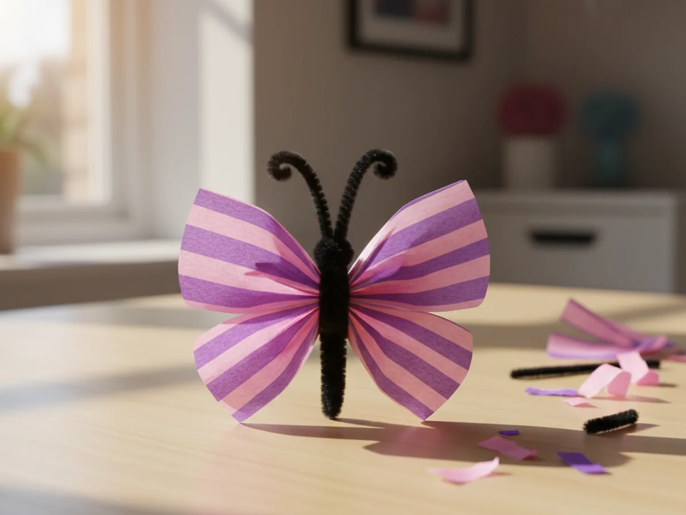
5. Hanging Crepe Paper Jellyfish
Stuff a small balloon-sized ball of newspaper into the center of a circle of pink crepe paper, gather the edges to form a round body, then attach long crepe paper streamers underneath as wavy tentacles. Hang it from the ceiling and watch your little one squeal as it sways. A wonderful summer or under-the-sea project for an indoor afternoon.
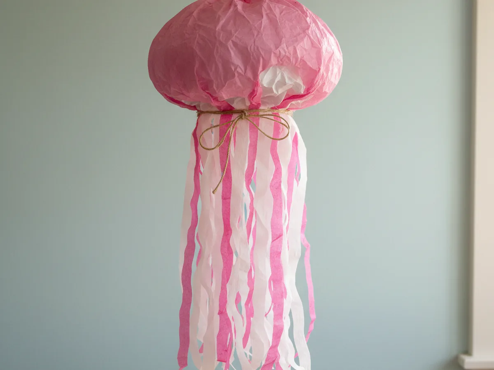
6. Cherry Blossom Branch in a Vase
Snip small squares of pale pink crepe paper, scrunch each one into a five-petal flower, and glue them along a real twig from the backyard. Pop the branch into a tall vase and you have a charming little spring centerpiece. Easy crepe paper crafts like this one make your kitchen table feel a little more special with almost zero effort. 🌸
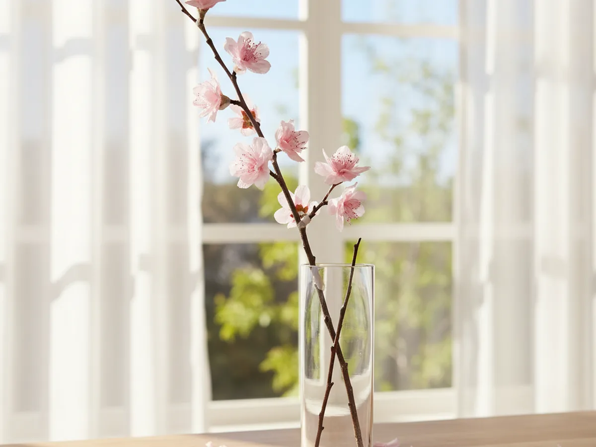
7. Pastel Crepe Paper Tassel Garland
Cut crepe paper into long rectangles, fringe one long edge with scissors, then roll each piece tightly to form a soft tassel. Tie or tape the tassels onto a length of string in a pastel rainbow order. This is one of those cute crepe paper crafts that looks like a high-end party shop decoration but takes about thirty minutes at the kitchen table.
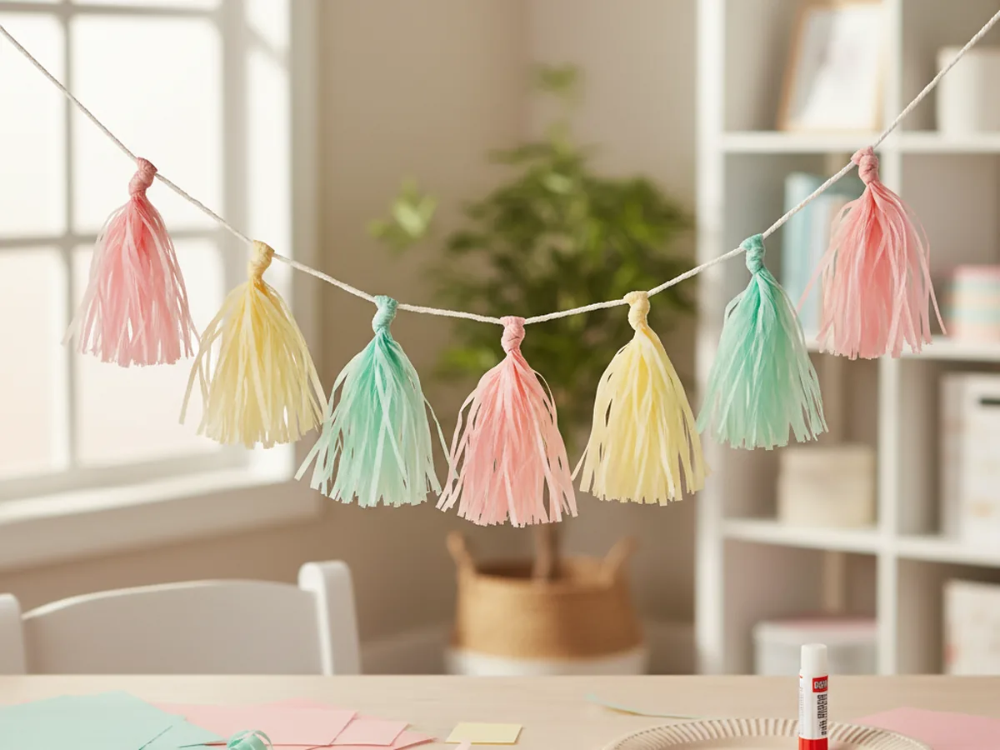
8. Crepe Paper Sunflower Card
Cut a circle of brown cardstock for the sunflower center, then fringe a strip of yellow crepe paper and wrap it around the brown circle to create the petals. Glue everything onto a folded card for a sweet handmade gift, perfect for grandma or a teacher. Beginner-friendly crepe paper crafts for kids like this one feel like a tiny win every time.
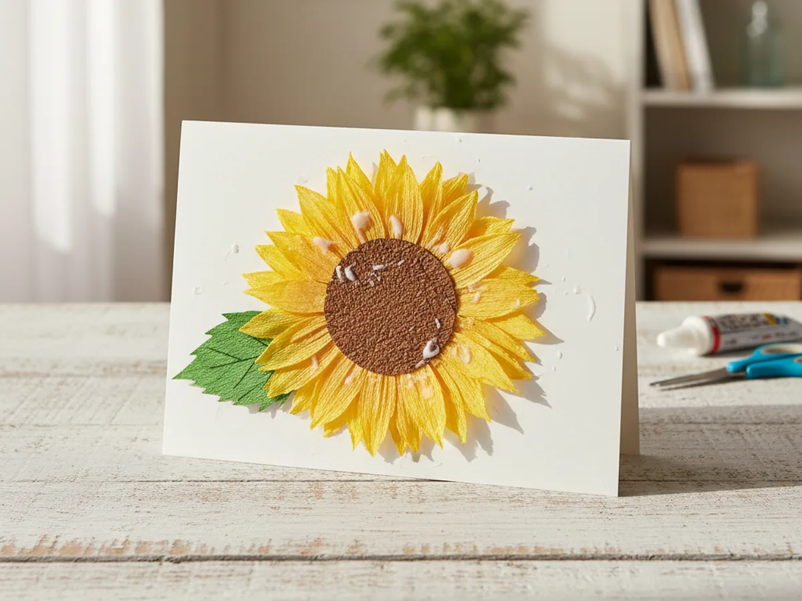
9. Tiny Crepe Paper Rosette Cluster
Cut a long strip of pink or red crepe paper, fold it in half lengthwise, and roll it slowly around itself to form a little rosette flower. A dab of glue at the base holds the shape. Make a cluster of five or six and tape them onto a piece of cardstock for a sweet wall display or the front of a journal.
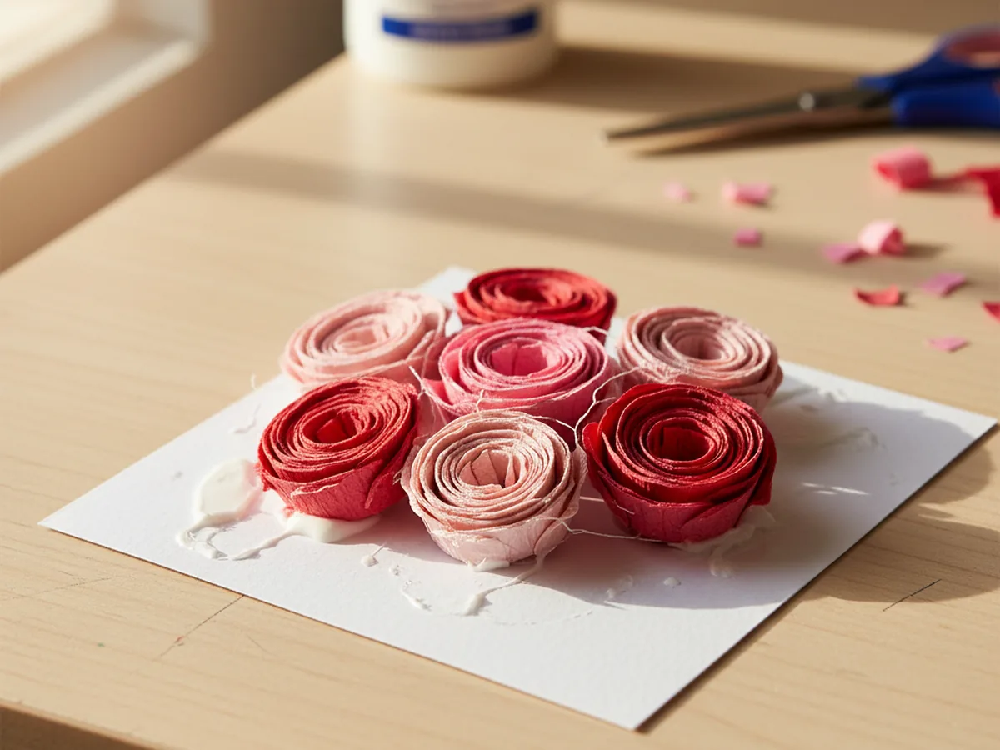
10. Hanging Crepe Paper Octopus Friend
Stuff a small ball of cotton or tissue into the center of a purple crepe paper square and tie it with string to form a round head. Attach eight long crepe paper streamer legs underneath and add two googly eyes on the front. Hang it in the bedroom or playroom for an under-the-sea buddy that floats at every passing breeze.
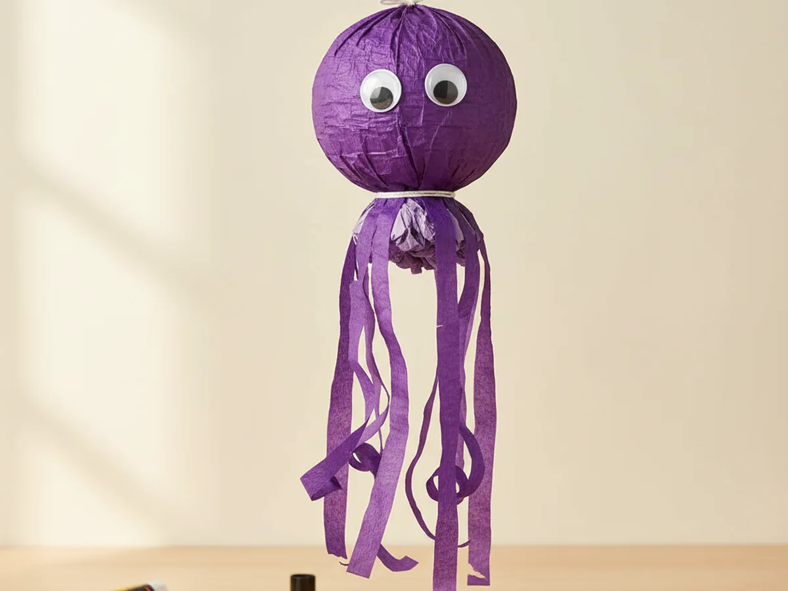
11. Birthday Streamer Backdrop
Tape long strips of crepe paper streamers in coordinating birthday colors to a wall above the cake table. Mix flat hanging strips with a few twisted strips for movement. The whole thing comes together in fifteen minutes and looks absolutely Pinterest-perfect in birthday photos. Save the leftover streamers for next year.
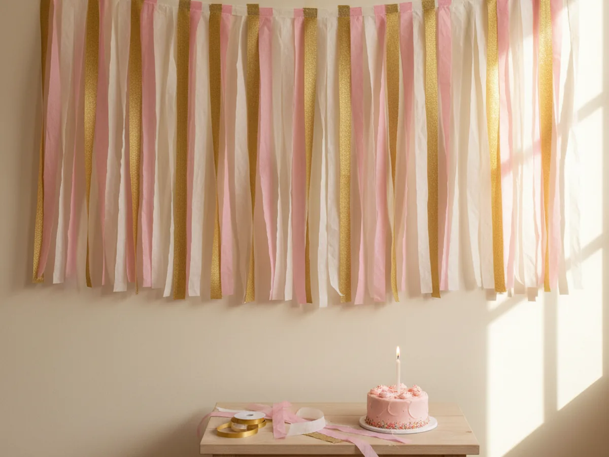
12. Crepe Paper Carnival Crown
Cut a strip of cardstock long enough to wrap around your child's head, then glue fringed crepe paper streamers along the top edge so they stand up like wild colorful spikes. Tape the ends together to form a crown and let your kiddo decorate their throne. Pure dress-up joy in twenty minutes.
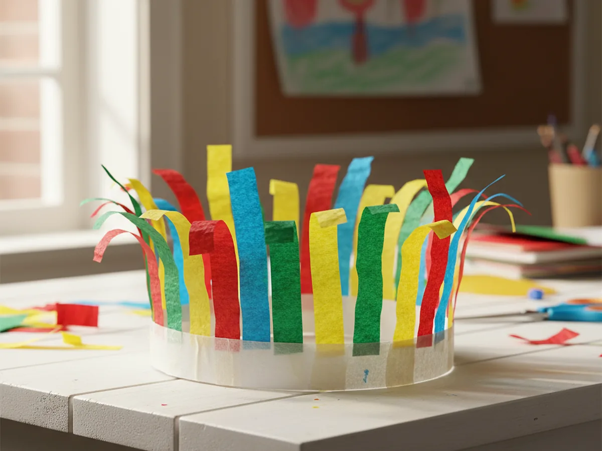
13. Crepe Paper Daffodil Bunch
Cut six pointed yellow petal shapes and glue them around a small orange crepe paper trumpet to make a single daffodil. Add a green floral wire stem and a green leaf, then bunch a few together in a vase. These cheerful spring crepe paper crafts bring the garden indoors before the real flowers even bloom.
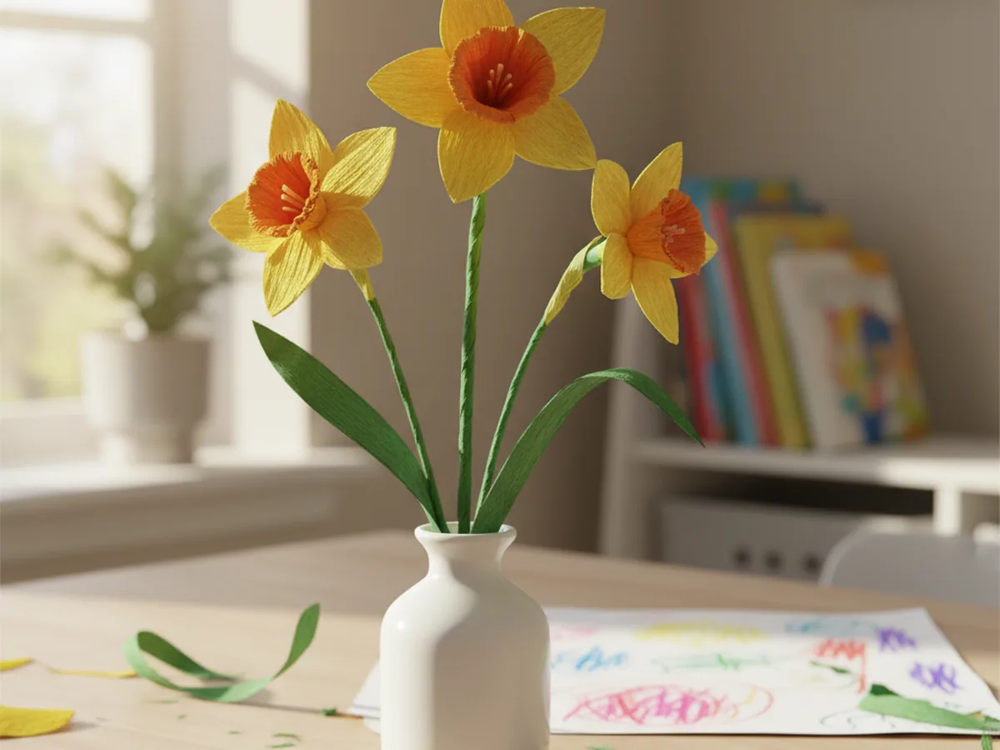
14. Crepe Paper Easter Egg Wraps
Wrap a hard-boiled or wooden egg in a square of bright crepe paper and twist the ends like a candy wrapper. Add a little ribbon bow at each end and you have an instantly festive Easter basket filler. A great crepe paper crafts for kids idea when you want something pretty and quick on the day of an egg hunt.
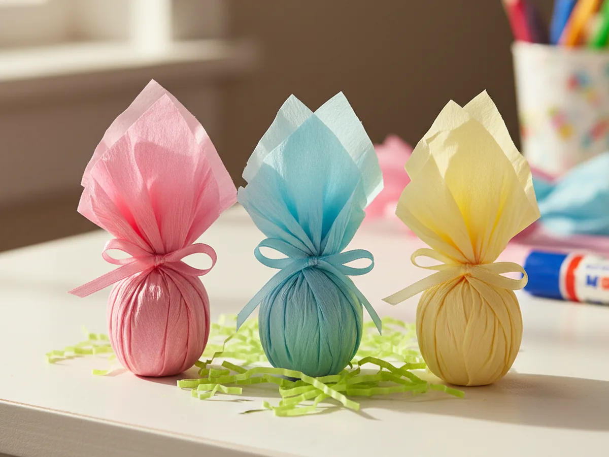
15. Streamer Ribbon Dancer Wand
Tape four or five long crepe paper streamers to one end of a wooden dowel or a sturdy paper straw. Hand it to your child and watch them spin, twirl, and dance around the living room. A simple way to burn off a little energy on a rainy afternoon and one of the most delightful crepe paper crafts for movement-loving kids.
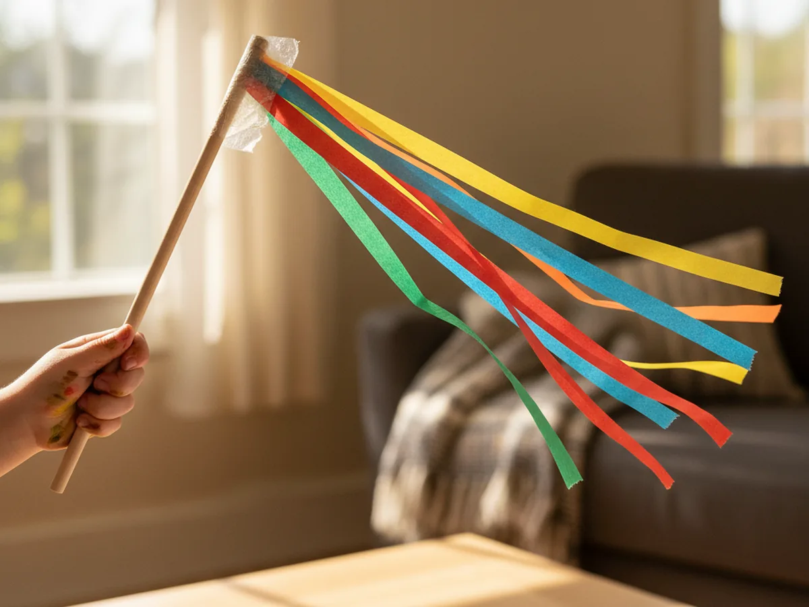
16. Watermelon Slice Garland
Cut half-circle shapes from green and red crepe paper, glue them together with a thin white strip in between, and add a few small black paper seed dots. String five or six watermelon slices on a piece of twine for a sweet summer garland. Such a cheerful project to hang above the kitchen sink in July.
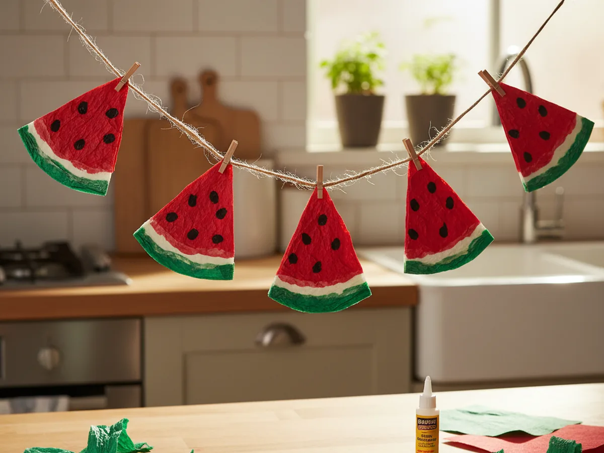
17. Crepe Paper Spider Web Door Cover
Stretch long strips of black crepe paper across a doorway in a web pattern, then add a few small black paper spiders for a quick Halloween entrance. Kids love being told to crawl underneath like brave little explorers. Cleanup is genuinely a one-minute job.
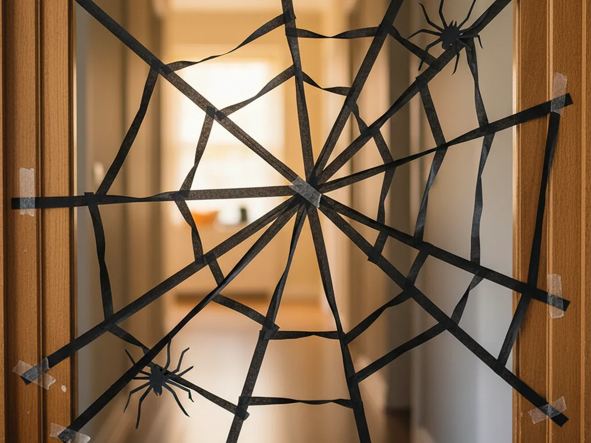
18. Ice Cream Cone Mobile
Cut a brown paper triangle for the cone, then tape three crumpled pastel crepe paper balls on top to look like scoops of ice cream. Hang several from the ceiling on different lengths of string for a sweet shop vibe in the bedroom. Fun crepe paper crafts like this one are perfect for a summer-themed birthday party.
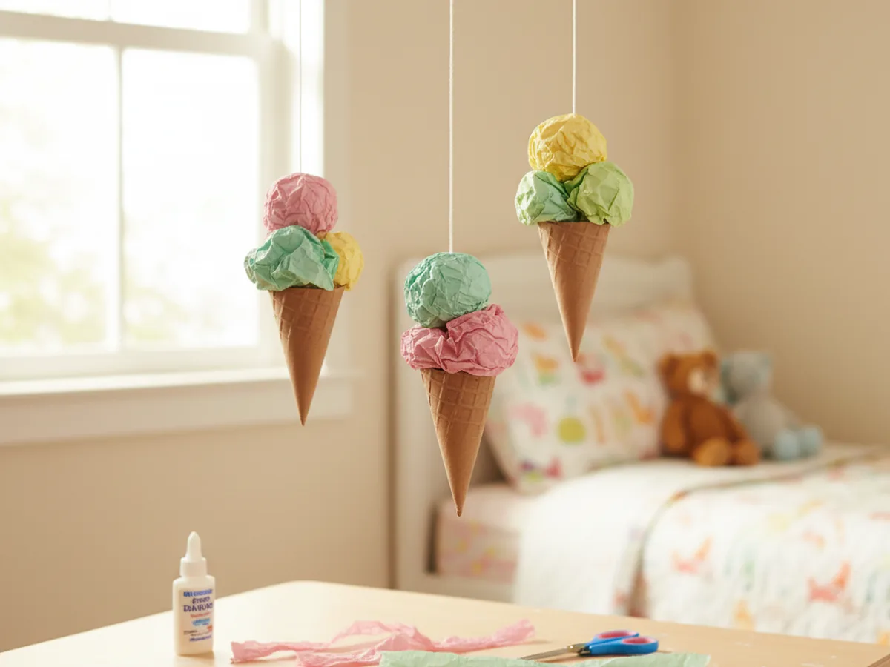
19. Crepe Paper Confetti Shaker
Snip crepe paper into tiny squares and pour the bits into an empty plastic bottle or a sealed paper cup with a small lid. Shake it like a maraca for a cheerful little instrument that doubles as a sensory toy. Fantastic for music time with the under-three crowd.
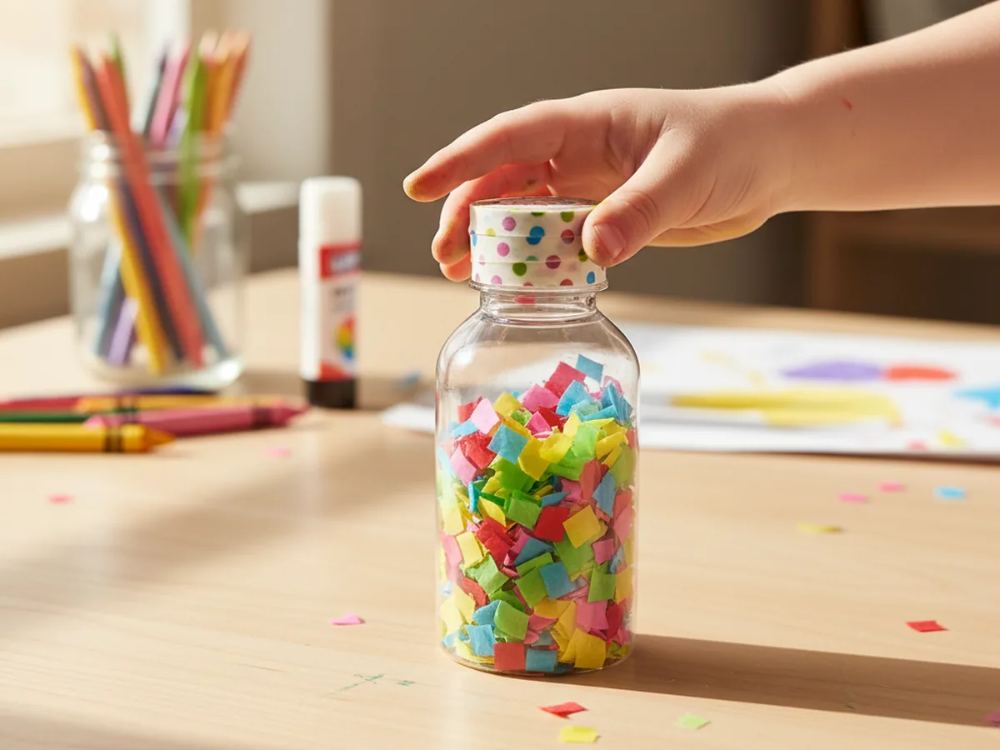
20. Crepe Paper Pinwheel
Cut a square of stiff crepe paper, mark four diagonal cuts halfway to the center, fold every other corner toward the middle, and pin it onto a wooden stick or a straw. Blow on it gently and watch it spin. A timeless crepe paper craft that kids ask to make again the next sunny afternoon. ✨
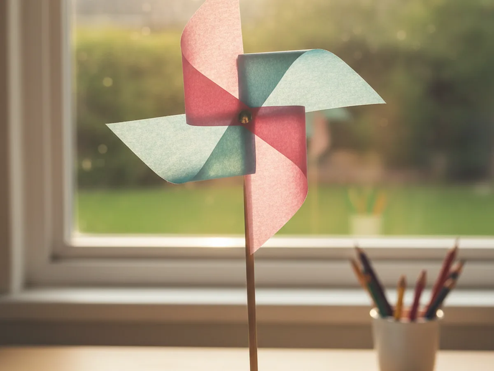
Final Thoughts
These crepe paper crafts are the kind of simple, colorful projects that fill the house with little smiles and almost no mess. Pick one for tonight, save a couple for the next slow weekend, or work through the whole list together as a sweet little tradition. Crepe paper is forgiving, soft, and almost impossible to mess up, which makes it one of the kindest craft materials for small hands. The real magic, of course, is the time spent together at the table.
More Crafts You'll Love
If your little one enjoyed these soft, colorful ideas, these two are perfect for your next afternoon together.
- 15 Easy Tissue Paper Crafts Kids Will Love
- Paper Flower Craft for Kids: Simple Step-by-Step Tutorial
Have fun, save the leftover streamers for next time, and enjoy every colorful little moment with your child.